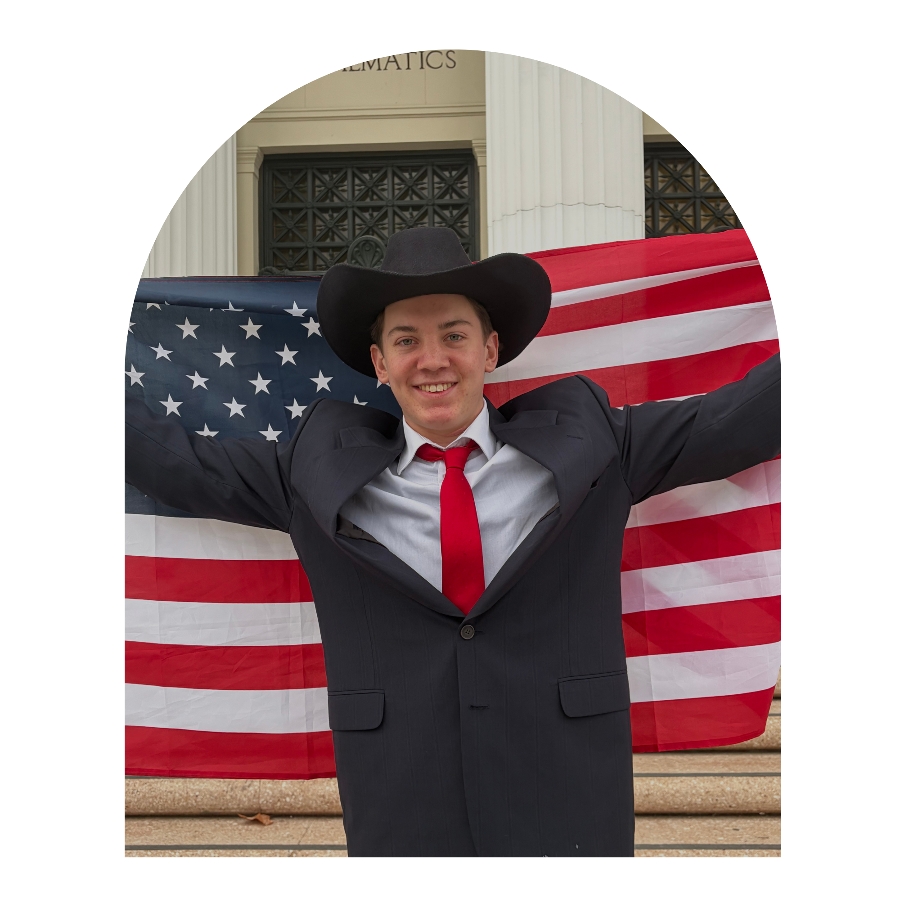

Carson Abbott
I am Carson Abbott, a native Texan who has served as the Republican Governor of Texas for the past 11 years.
Native to Wichita Falls, Texas specifically, Abbott grew up with a homemaker mother and a father who was a stockbroker and insurance salesman. His family relocated to Longview, Texas when he was young and later Duncanville, a suburb of Dallas. When Abbott was in high school, he was faced with his father’s death, causing both his mother and himself to pick up various jobs to support the family. With this experience, Abbott has become well-versed in the world of financial responsibility and the importance of hard work & discipline.
In 1977, Abbott enrolled in the University of Texas at Austin as a Business Administration major. He completed schooling here in 1981 and soon after married his current wife, Cecilia Abbott. Abbott later went on to earn a law degree from Vanderbilt University’s Law School. In the years following this academic achievement up until now, he has served various roles, including being an Attorney, State District Judge, Justice of the Texas Supreme Court, and Attorney General of Texas.
He has now served as the Governor of Texas for over a decade and is seeking re-election. Please refer to the information below for his core policies.
Core Policies of Abbott & the national Republican Party platform
Taxes & Housing
- Cutting property taxes to reduce the financial burdens placed upon our homeowners
- Limiting government spending and local tax increases
- Making housing more affordable by reducing regulations that make construction expensive
- Speeding up construction approvals so that more homes can be built to meet growing demands
Border Security
- Stronger enforcement along the U.S. & Mexico border to reduce the amount of illegal crossings
- Building additional physical barriers, including sections of border wall & fencing
- Implementing tougher measures against illegal immigration, including detaining migrants
- Building upon past state initiatives to deploy Texas National Guard troops and state law enforcement officers to the border
Education
- Implementing school voucher programs that will allow families to use public funds toward private school tuition & other educational expenses
- Giving parents more control over children’s school curriculum
- Increasing funding for public education while reducing unnecessary administrative spending
- Reducing college costs & creating accelerated degree programs so students can graduate sooner
Energy
- Expanding competition among electricity providers so consumers can choose the best plans for them
- Expanding energy production & maintaining a strong energy industry
- Allowing for affordable and reliable energy to help attract businesses, create jobs, and strengthen our economy
Public Safety
- Providing police and state law enforcement agencies with resources to fight crimes
- Increasing accountability for serious crimes by keeping repeat and violent offenders behind bars
- Implementing stricter bail rules for people accused of specific violent crimes
- Expanding on anti-gang initiatives